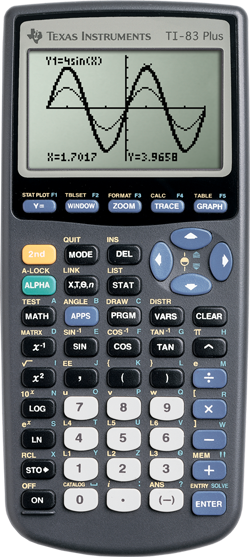

Material de apoio para a disciplina Linguagem de Programação da UACSA/UFRPE - 2020.1
Produzido pelo prof. João Pimentel
Você consegue imaginar como seria a vida dos estudantes de engenharia sem calculadoras? Sem (aimeudeus) o autocad?
A programação é mais uma das ferramentas que nós podemos utilizar, assim como já utilizamos outras ferramentas como as calculadoras, réguas, etc. 📐🛠️
Ainda mais importante do que aprender a programar, é entender o raciocínio da coisa. O pensamento computacional lhe ajudará a ter mais facilidade para resolver problemas de todo tipo.
Mas não é só isso! No vídeo a seguir o Guanabara irá lhe explicar outros motivos para aprender a programar, com a ajuda de Bill Gates e de Steve Jobs.